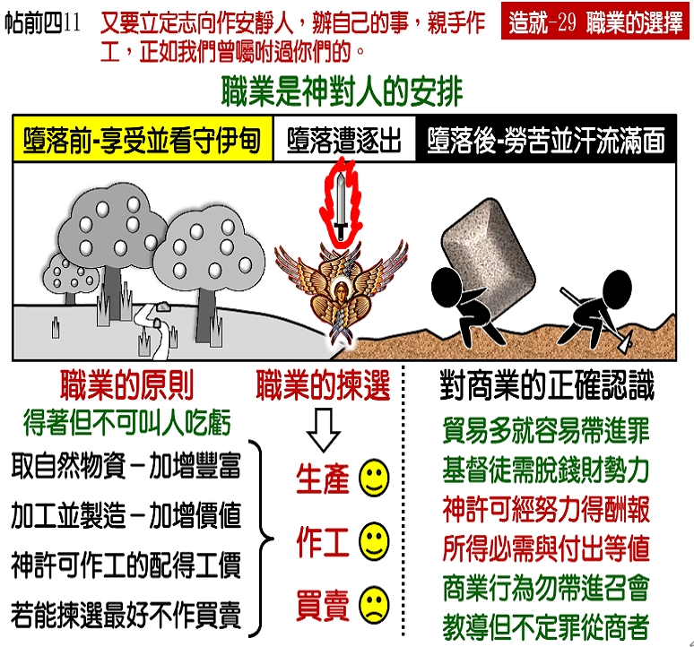

诗歌：324 首、661 首
重要经文：
帖撒罗尼迦后书三章十至十二节：我们在你们那里的时候，也曾将这事嘱咐你们，若有人不愿作工，就不可吃饭。因我们听说，在你们中间有些人不按规矩而行，什么工都不作，反倒好管闲事。我们在主耶稣基督里，嘱咐并劝勉这样的人，要安静作工，吃自己的饭。
马太福音十三章八节：但有的落在好土里，就结果实，有的一百倍，有的六十倍，有的三十倍。
歌罗西书四章十四节：亲爱的医生路加，和底马问你们安。
纲目要点：
壹 在圣经里神所安排的职业：
一 旧约时代。
二 新约时代。
贰 职业的原则：
一 从大自然取得物资－加增丰富。
二 加工制造－加增价值。
三 作工的得工价。
四 作买卖。
参 从三类不同的职业中去拣选。
肆 不可作纯商业。
伍 纯商业和生产商是不同的。
陆 神所悦纳的职业－牧羊、种地、医生、教师。
柒 在职业上，能够讨神的喜悦。
信息选读：
旧约时代
基督徒的职业，是一件大事。职业如果选错了，前面的路就走不好。所以基督徒必须注意到职业的拣选。当神创造人的时候，神就替人安排了职业。神所分派给亚当和夏娃作的事，乃是修理看守。所以，职业乃是人类没犯罪之前就有的。亚当和夏娃当初的职业就像园丁一样，在那里看守修理神所造的伊甸园。亚当和夏娃犯罪之后，地就不给他们效力，他们要汗流满面才得糊口，他们要种地才有得吃。这明显给我们看见，在人堕落之后，神所规定的职业是作农夫种田。人必须汗流满面的种地，地才给人效劳，才叫人得着粮食。到了创世记四章的时候，你看见该隐种地，亚伯牧羊。现在是加上了牧羊，可见畜牧也是神所悦纳的职业。到创世记十二章，神拣选亚伯拉罕。亚伯拉罕也是牧人。他有许多的牛，有许多的羊。到雅各的时候，他也是有牛群和羊群。可见他们主要的职业都是畜牧。
新约时代
在马太福音主耶稣所引的比喻里，我们看见耕种是一个基本的职业。比方在十三章里，有撒种的比喻。在二十章里，有葡萄园的比喻。在路加十七章，说到有仆人耕地，或是从田里放羊回来。在约翰十章，主说好牧人为羊舍命，这是畜牧。所以耕种和畜牧是神给人规定的基本职业。路加作医生，保罗织帐棚。织帐棚和打鱼不同，是加工的制造。人耕地是直接的生产。织布，作裁缝或者作帐棚，这些都是加工的制造。主的门徒或者是作农夫，或者是作牧人，或者是作匠人，或者是打鱼，或者是加工的制造。如果再要增加一个职业，至多可以加上作工的人。
职业的原则
一 从大自然取得物资－加增丰富。撒种的人，拿一粒麦子撒在地里，等一等结出许多子粒来，或者三十倍，或者六十倍，或者一百倍。一粒变作一百粒，或者变作六十粒，或者变作三十粒。你把种子种在地里，叫它生长，它结出子粒来。你看见这是从天然取得供给。
二 加工制造－加增价值。保罗的织帐棚，也是同样的原则。不过，他不是直接往天然里去取。保罗在那里是加上他的工夫去制造。这一个乃是加增一个东西的价值。比方，一块布原来只值一块钱，我把它裁了，缝了，成功作帐棚，就值了两块钱。它的价值加增了，我就得着加值的工钱。
三 作工的得工价。花了那么多的工夫，出了那么多的代价，作了那么多的事，所以我有了那么多的收入。作工的得工价，也是神所许可的事。
作买卖
盼望初信的弟兄，如果有力量拣选他的职业，最好能够不作买卖。为什么缘故呢？我想先把这一个问题扩大来看，也许能够看得清楚一点。比方说，我们这里有一百个人，每个人有一百万块钱。这一百个人合在一起，就有一亿。我问你们，我如果出来作买卖，作生意，自然就想赚钱，就盼望我这一百万变作两百万。你们且不管我如何作生意，是公义还是不公义。无论如何，我作了一个月的生意之后，变作两百万。在你们中间，总是有的人的钱少了。这是定规的。因为我们一百个人，每个人都有一百万，我手里也只有一百万。即使我用最公义的方法作生意，叫我手里的钱变作两百万，总是叫你们中间有的人的钱缺了，有的人的钱少了。神是要我们的职业能够加增丰富。这一个基本原则是相当的清楚。初信的弟兄们，不要一天到晚在那里想钱。不要一直想怎样能够赚钱。
从三类不同的职业中去拣选
我们在这里，看到三种不同的职业：一类是作买卖，一类是作工，一类就是生产。神在圣经里所规定最高的职业，就是作生产的人。从亚当起，神所特别注意的职业是生产。因为生产是我加增丰富，而不叫别人贫穷。我养了一百只羊，过了多少年，变作四百只。但是这一个加增，并没有叫任何弟兄姊妹的口袋里少一块钱。你们原来家里有多少钱，仍然有多少钱。绝不会因我的羊生了小羊，你们就减少。这是在圣经里职业的基本原则。我要叫我所有的东西加增，我要叫我的丰富加增。
神所悦纳的职业
牧羊的人，种地的人，是生产的人。作买卖的人，是另外一种人。又有一种人，是夹在两者中间的，就是作工的人；像医生，教师，他们是把他们的工夫拿出来。这在圣经里，也是一种好的职业。他们虽然不生产，但是他们也无所取于人。他们不从天然里有所得，也不从人身上有所得。他们乃是用自己的时间，用自己的体力，用自己的脑力，去换取他们所该得着的养生之物。作工的得工价，是应该的。这也是神在圣经里所喜欢的职业。最高的职业是生产的职业，其次是作工，花脑力或花体力来得着酬报。
在职业上，能够讨神的喜悦
我们盼望，凡是能够由得自己拣选职业的弟兄，千万不要进到纯商业的里面去。已经在里面的弟兄，我们要帮助他，叫他看见，叫他改过来。不要和他为难，但最少这一条路得叫他清楚。我们盼望初信的弟兄们，总要用劳力去赚钱，而不是一手进来，一手出去那样赚了许多钱。我们的原则总是加增丰富，不是加增钱。如果这样，进来的钱就是清洁的，奉献到神那里的钱能够蒙悦纳。每一块的钱，能够有好的结果。假定有一个弟兄，作了一个篮子拿去卖，然后拿来奉献，这比一个弟兄买来十个篮子再卖出去，把所赚的利钱拿来奉献，要好得多。虽然奉献的钱数一样，但是那一个钱不一样。盼望许多弟兄姊妹能够看见这一个原则。要么就是劳力，要么就是生产，这两个原则都是对的。买卖，我不能禁止，我也不敢禁止。不过我说，要尽力量不作纯商业的事。无论如何，这是拖基督徒下水的。盼望初信的弟兄们，在职业上，都能够讨神的喜悦。
课程复习：
一 我们在圣经里看见旧约时代神所安排的职业是什么?
二 我们在圣经里看见新约时代神所安排的职业是什么?
三 职业的三个原则为何？
四 神所悦纳的职业有哪几项？
五 我如何在职业的选择上，能够讨神的喜悦？
